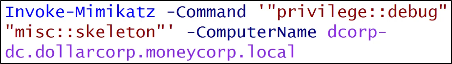

Skeleton Key
La Skeleton Key è una tecnica usata per la Domain Persistence.
Viene usata per patchare il DC con permessi da Domain Admin
(precisamente, il processo lsass di Local Security Authority Subsistem Service)
in modo da permettere l'accesso come qualsiasi utente,
usando un'unica password.
Attacco scoperto da Dell Securework,
fu usato in un malware chiamato Skeleton Key.
Questi metodi attualmente conosciuti NON sono persistenti
attraverso i reboot.
Injecta una skeleton key (la password sarà "mimikatz")
su un DC a scelta. Necessita di permessi da Domain Admin.

Una volta fatto ciò, puoi usare il comando Enter-PSession per accedere
alla macchina con la Skeleton Key.
Basta provvedere un username valido!

NB: Puoi accedere ad altre macchine, a patto che si autenticano
con il DC patchato dalla Skeleton Key e che il DC non sia stato rebootato!
Nel caso lsass fosse patchato di sicurezza: